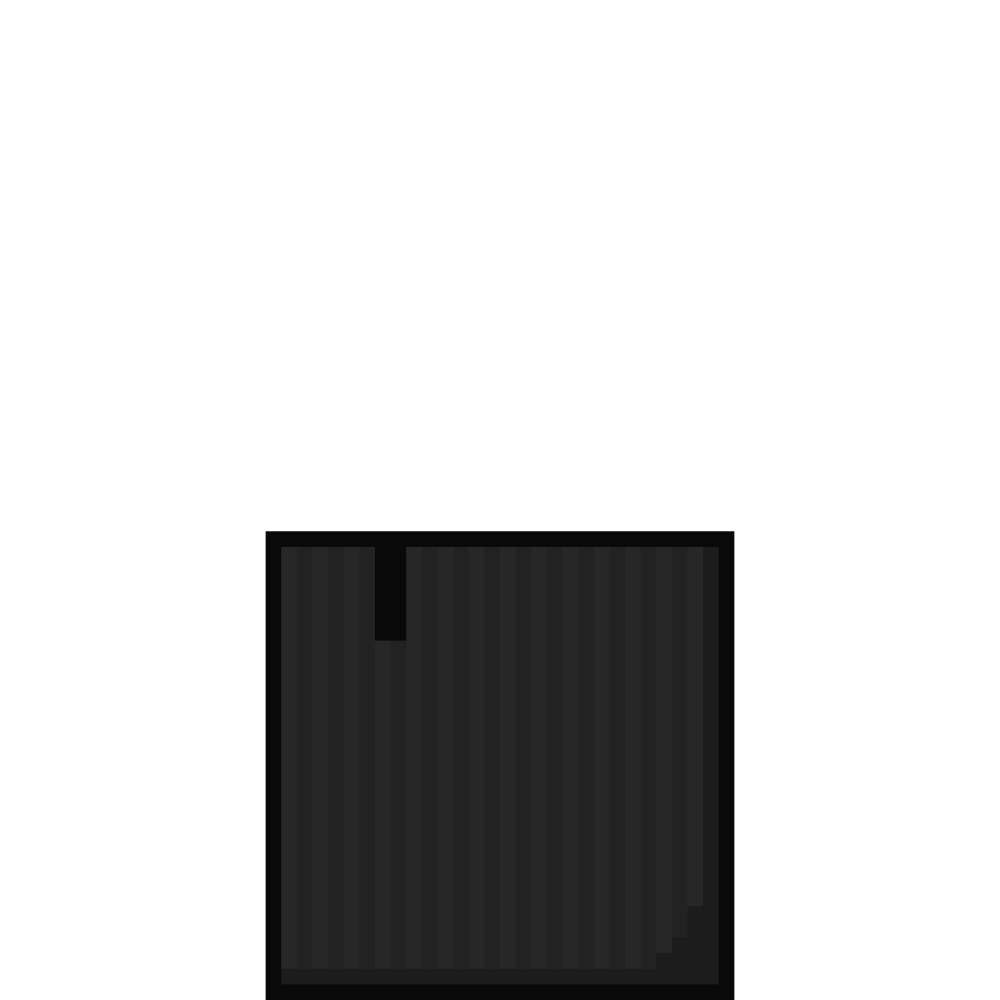
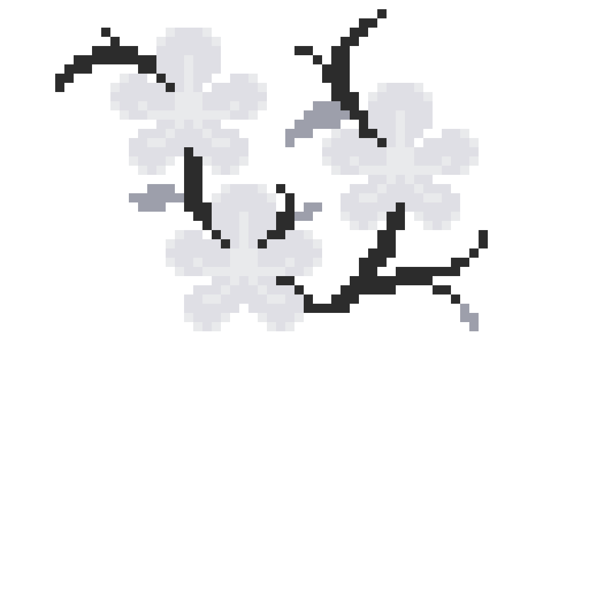
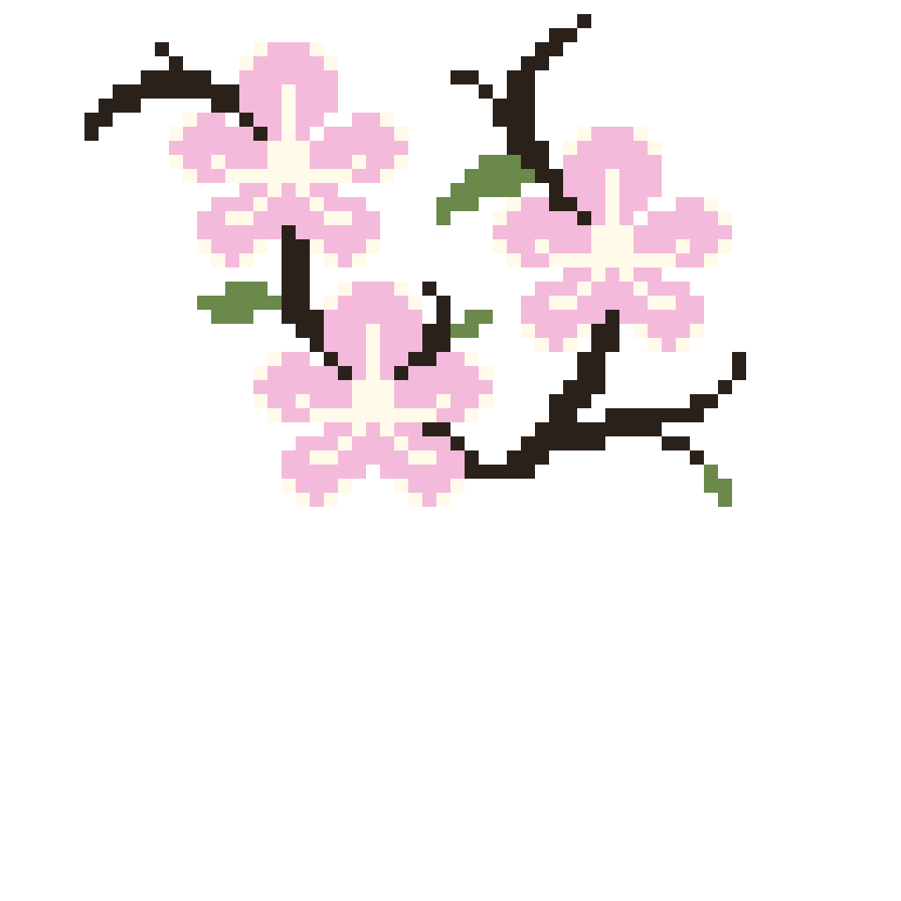

arrangement elements
ikebana flower arrangements are mostly known for their minimalist aesthetic. in an ikebana flower arrangement, equal emphasis is put on the three main elements that make up the arrangement: mass, colour and line.
all three elements do not always have to be present in ikebana arrangements. sometimes you might consider emphasising one element and showcasing its beauty. ikebana is about balancing the elements and using them effectively to create arrangements that express the artist's thoughts and emotions.
click on the image below to learn about the arrangement elements in ikebana!



mass
mass in ikebana is a somewhat controversial topic: on one hand it may not be considered ikebana due to the similarity in appearance to western arrangements, and on the other constructing a proper mass can be rather difficult.
while flowers are a primary material in ikebana arrangements, they are not the only material that can be used for construction mass. mass in ikebana arrangements can be made using leaves, twigs, artificial objects, paper, etc. to help enhance the arrangement.
click on the image above to learn about colour in ikebana!
colour
colour in ikebana can be used in several different ways in arrangements, such as using a single colour, using a tonal range (e.g. red, orange and yellow), or using contrasting/complementary colours(e.g. yellow and blue/violet).
different colour arrangements work for different situations. if you want an ikebana arrangement to be the focal point of a room, the contrast arrangement works perfectly for that. however, if you want to start in a safer territory or if you just want something relaxing and easy on the eyes, a single tonal range arrangement would work best.
click on the image above to learn about lines in ikebana!
line
there are different types of lines that can be used in arrangements, including the natural curves of branches, the straight lines of reed and bamboo, and the curled stems of flowers.
an arrangement can be made more eye-catching even with just a single strong line added in. bold lines and a minimal number of flowers can create a dramatic impact on the space where the arrangement is displayed.
click on the image above to reset the arrangement!